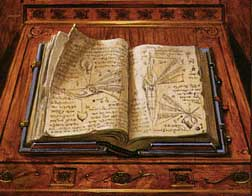
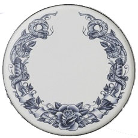
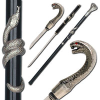

REGOLE GENERALI PER LA PRODUZIONE DEGLI INCANTAMENTI MINORI
Gli incantamenti magici minori possono essere creati dai chierici del Serpente a partire dal raggiungimento di un livello minimo che varia al variare della potenza dell'incantamento minore come previsto nella seguente tabella:
|
POTENZA DELL'INCANTAMENTO |
LIVELLO RICHIESTO |
| Least Minor Enchantment | 4° livello di esperienza |
| Lesser Minor Enchantment | 5° livello di esperienza |
| Minor Enchantment | 6° livello di esperienza |
| Superior Minor Enchantment | 7° livello di esperienza |
| Greater Minor Enchantment | 8° livello di esperienza |
REGOLE SPECIFICHE PER PRODURRE INCANTAMENTI MINORI DEL SERPENTE
1) IL TOMO SACRO DEGLI INCANTAMENTI
|
 |
I chierici del Serpente che desiderano creare incantamenti magici minori devono possedere il Tomo Sacro degli Incantamenti. Il tomo sacro rappresenta un oggetto personale di ogni singolo chierico. Possedere questo tomo, infatti, come del resto ogni altro oggetto sacro, rientra nella pratica del culto della divinità. Per tale motivo il chierico che acquista tale tomo riceverà 350 punti esperienza bonus. Occorre osservare che il chierico acquisirà i punti esperienza solo quando abbia raggiunto il livello di esperienza minimo necessario a produrre gli incantamenti minori. Si noti che questi punti esperienza saranno applicati unicamente al personaggio ed in nessuna misura ai punti partenza e che, di ruolo, il chierico eviterà in ogni modo di disfarsi dei suoi tomi sacri (qualora li venda o li regali costui sarà quindi penalizzato dal Dungeon Master). Il tomo sacro ha un costo pari a 750 monete d'oro ed un peso pari a 6 libbre, la sua manutenzione ha un costo pari a 5 monete d'oro al mese. Il chierico deve poter consultare il proprio Tomo Sacro degli Incantamenti durante tutta la fase di creazione degli oggetti magici minori. |
2) IL VASSOIO DEL SERPENTE :
|
 |
I chierici del Serpente che desiderano creare incantamenti magici minori devono possedere, inoltre, il Vassoio del Serpente. Si tratta di un vassoio rituale sul quale deve essere riposto l'oggetto che si desidera incantare, per l'intero periodo necessario al procedimento di incantamento. Il vassoio sarà poi riposto sotto la grande statua del Serpente nel all'interno della zona sacra del tempio. Si noti che un unico oggetto può essere riposto sul vassoio e se l'oggetto viene rimosso il procedimento dovrà essere ripetuto di nuovo. Il Vassoio del Serpente rappresenta un oggetto personale di ogni singolo chierico. Possedere questo vassoio, infatti, come del resto ogni altro oggetto sacro, rientra nella pratica del culto della divinità. Per tale motivo il chierico che acquista per la prima volta questo oggetto sacro riceverà 150 punti esperienza bonus. Occorre osservare che il chierico acquisirà i punti esperienza solo quando abbia raggiunto il livello di esperienza minimo necessario a produrre gli incantamenti minori. Si noti che questi punti esperienza saranno applicati unicamente al personaggio ed in nessuna misura ai punti partenza e che, di ruolo, il chierico eviterà in ogni modo di disfarsi dei suoi tomi sacri (qualora li venda o li regali costui sarà quindi penalizzato dal Dungeon Master). Un chierico può possedere anche più di questi vassoi per mantenere sotto incantamento diversi oggetti (in nessun caso, però, il chierico riceverà punti esperienza bonus per l'acquisto di ulteriori vassoi). Il Vassoio del Serpente ha un costo pari a 250 monete d'oro ed un peso pari a 3 libbre, la sua manutenzione ha un costo pari a 2 monete d'oro al mese. |
3) TEMPO DI PRODUZIONE : Il tempo di produzione minimo di un incantamento minore dipende dal tipo di incantamento ed è espresso nella seguente tabella. Il chierico può dedicare più o meno tempo alla produzione di un incantamento minore, rispettivamente migliorando o peggiorando le proprie possibilità di successo. In ogni caso non occorre che il chierico effettui i giorni di lavoro consecutivamente ben potendo sospendere il lavoro quando desidera per poi riprenderlo successivamente.
| TIPOLOGIA DI INCANTAMENTO |
LIVELLO DI ESPERIENZA DEL CHIERICO DEL SERPENTE |
|||||
| 4° LIVELLO | 5° LIVELLO | 6° LIVELLO | 7° LIVELLO | 8° LIVELLO | 9+° LIVELLO | |
| Powder of Emotionless | 21 | 18 | 15 | 12 | 9 | 9 |
| Pergamena del Serpente | 21 | 18 | 15 | 12 | 9 | 9 |
| Dust of Snake | 22 | 19 | 16 | 13 | 10 | 9 |
| Ring of the Serpent Sect | -- | 33 | 30 | 27 | 24 | 21 |
| Staff of Lesser Serpent Conjuration | -- | -- | 45 | 42 | 39 | 36 |
| Lesser Poisonous Weapon | -- | -- | -- | 54 | 51 | 48 |
| Mask of the Spitting Snake | -- | -- | -- | 57 | 54 | 51 |
| Scale Mail of Lesser Regeneration | -- | -- | -- | -- | 90 | 87 |
| Superior Poisonous Weapon | -- | -- | -- | -- | 99 | 96 |
| Cup of Serpent Blood | -- | -- | -- | -- | 99 | 96 |
| Amulet of Serpent Protection | -- | -- | -- | -- | 102 | 99 |
4) COSTI DI PRODUZIONE : Per la produzione di un incantamento minore il chierico deve utilizzare un ammontare di reagenti e polveri magiche pari ad un determinato ammontare del valore finale dell'incantamento. Il chierico può decidere di utilizzare componenti magici in misura ridotta, normale od abbondante. Questa scelta di ripercuoterà sulle % di successo dello stesso nella produzione dell'oggetto magico, come in seguito specificato.
|
AMMONTARE DI REAGENTI |
% DEL VALORE FINALE |
| Componenti magici in misura ridotta | 20 % |
| Componenti magici in misura comune | 25 % |
| Componenti magici in misura abbondante | 30 % |
5) PERCENTUALE DI SUCCESSO : Al termine dei giorni di lavoro il chierico potrà tirare un dado percentuale per verificare se la creazione dell'oggetto ha avuto successo. Qualora il tiro del dado dia un risultato negativo, il chierico avrà perso tempo e denaro (costi di produzione) e non avrà incantato l'oggetto. Il chierico, però, potrà in futuro ripetere il procedimento al fine di incantamento con lo stesso incantamento minore il medesimo oggetto. In questo caso, il chierico impiegherà solo la metà del tempo e delle risorse richieste dal procedimento prescelto ottenendo un bonus alla percentuale di successo pari al +5% cumulativo fino ad un bonus massimo del +15%. In nessun caso il chierico potrà ottenere una percentuale di successo superiore al 95%, risultando un risultato da 96 a 100 sempre in un fallimento critico. In caso di fallimento critico il personaggio non potrà più provare ad incantare quel singolo oggetto con quel determinato incantamento minore. Con un tiro naturale da 01 a 05, invece, si verificherà un successo critico. In caso di successo critico il procedimento di incantamento sarà riuscito ed il chierico avrà anche risparmiato il 10% dell'ammontare di reagenti magici.
|
POTENZA DELL'INCANTAMENTO |
% BASE DI SUCCESSO |
| Least Minor Enchantment | 33 % |
| Lesser Minor Enchantment | 30 % |
| Minor Enchantment | 27 % |
| Superior Minor Enchantment | 24 % |
| Greater Minor Enchantment | 21 % |
|
LIVELLO DI ESPERIENZA DEL MAGO |
MODIFICATORE % |
| Per ogni livello di esperienza raggiunto | + 1 % |
| Per ogni superiore grado di potenza di minor enchantment che il chierico è potenzialmente in grado di produrre rispetto a quello che sta producendo * | + 5 % (max +20%) |
|
COMPETENZE POSSEDUTE |
MODIFICATORE % |
| Se il chierico riesce in una prova in Ceremony | + 5 % |
| Se il chierico riesce in una prova in Religion | + 3 % |
|
TEMPO DI PRODUZIONE |
MODIFICATORE % |
| Riduzione del tempo di produzione * | - 5 % |
| Tempo di produzione base | nessuno |
| Aumento del tempo di produzione * | + 5 % |
|
AMMONTARE DI REAGENTI |
MODIFICATORE % |
| Componenti magici in misura ridotta | - 5 % |
| Componenti magici in misura comune | nessuno |
| Componenti magici in misura abbondante | + 5 % |
|
CRISTALLO DI ROCCIA SACRO |
MODIFICATORE % |
| Ogni Punto Sacro del Serpente utilizzato | + 5% (max +10%) |
| * Questo bonus cumulativo si aggiunge a quello generico dovuto all'esperienza del chierico. Per determinare l'ammontare di questo bonus occorre determinare quanti incantamenti di potenza superiore il chierico sarebbe potenzialmente in grado di creare per il livello di esperienza raggiunto. Per ogni incantamento di potenza superiore al quale il chierico ha potenzialmente accesso costui riceve un bonus cumulativo del +5%. Qualora, ad esempio, un chierico di 8° livello si cimentasse a creare un Lesser Minor Enchantment costui otterrebbe per il suo livello di esperienza un bonus base di +8 oltre ad un bonus di +15 per essere in grado di produrre incantamenti di tre potenze superiori. Se, invece, lo stesso chierico si cimentasse a creare un Minor Enchantment costui otterrebbe per il suo livello di esperienza un bonus base di +8 oltre ad un bonus di +10 per essere in grado di produrre incantamenti di tre potenze superiori. |
| * L'ammontare di giorni di differenza in caso di riduzione od aumento dei tempi di produzione sarà pari a due giorni per potenza di incantamento come indicato nella seguente tabella (tale riduzione/incremento potrà essere operato un'unica volta): |
|
POTENZA DELL'INCANTAMENTO |
GIORNI OPZIONALI |
| Least Minor Enchantment | 2 giorni |
| Lesser Minor Enchantment | 4 giorni |
| Minor Enchantment | 6 giorni |
| Superior Minor Enchantment | 8 giorni |
| Greater Minor Enchantment | 10 giorni |
5 bis) MODIFICHE SPECIFICHE PER TIPOLOGIA DI INCANTAMENTO
| Lesser Poisonous Weapon |
| Superior Poisonous Weapon |
|
QUALITA' DELL'OGGETTO |
MODIFICATORE % |
| Arma di comune qualità | - 9 % |
| Arma di buona qualità | - 6 % |
| Arma di eccellente qualità | - 3 % |
| Arma di superba qualità | nessuno |
| Arma magica con incantamento maggiore | +5 % |
| Arma di materiale speciale Adamantium | +1 % |
| Arma di materiale speciale Arcanite | +3 % |
| Utilizzo di un'arma rituale del culto del Serpente* | +5 % |
|
* Per arma rituale del culto del
Serpente si intende un'arma recante incisioni in rilievo raffiguranti
serpenti. Comunemente tali ornamenti sono effettuati in argento e
interessano l'elsa. In altri casi serpenti di argenti si attorcigliano
sull'arma o sono incisi sulla lama. Quando è possibile la stessa lama
appare sinuosa come il corpo di un serpente. Costruire una tale arma implica i
seguenti modificatori: |
 |
| Scale Mail of Lesser Regeneration |
|
QUALITA' DELL'OGGETTO |
MODIFICATORE % |
| Corazza di qualità comune | - 6 % |
| Corazza di buona qualità | - 3 % |
| Corazza di eccellente fattura | + 3 % |
| Corazza magica con incantamento maggiore | + 6 % |
| Corazza di Pelle di Spitting Hydra | + 1 % |
| Corazza di Pelle di Drago | + 2 % |
| Corazza di materiale speciale Arcanite | + 3 % |
| Ring of the Serpent Sect |
| Amulet of Serpent Protection |
|
QUALITA' DELL'OGGETTO |
MODIFICATORE % |
| Valore dell'Anello da 25 a 49 g.p. | - 3 % |
| Valore dell'Anello da 50 a 149 g.p. | nessuno |
| Valore dell'Anello da 150 in poi | +3% |
| Staff of Lesser Serpent Conjuration |
|
QUALITA' DELL'OGGETTO |
MODIFICATORE % |
| Valore della Staffa da 100 a 149 g.p. | - 3 % |
| Valore della Staffa da 150 a 199 g.p. | nessuno |
| Valore della Staffa da 200 in poi | +3% |
| Per ogni 50 g.p. di gemme incastonate nella Staffa | +1 % (fino ad un massimo di +10%) |
6) PUNTI ESPERIENZA
Qualora il chierico riesca nella creazione di un incantamento minore costui
riceverà, la prima volta che
riesce nella costruzione di un tipo specifico di oggetto magico, punti
esperienza pari al 100% di quelli dell'incantamento, mentre le
volte successive, punti esperienza pari al 50% di quelli
dell'incantamento che ha creato. Ogni volta che, invece, costui
porti a compimento il tentativo senza riuscire ad incantare l'oggetto riceverà
un ammontare di punti esperienza pari al 25% di quelli
dell'incantamento minore che ha provato a creare. Si noti che questi punti
esperienza saranno applicati unicamente al personaggio ed in nessuna misura ai
punti partenza.
Un chierico del Serpente che, avendo raggiunto l'ottavo livello di esperienza,
sia riuscito nella creazione di un incantamento minore per categoria di potenza
otterrà un bonus costante del
+2% ogni volta che ottiene punti esperienza fino
a che resterà in possesso di tutti gli oggetti sacri necessari alla creazione degli
oggetti magici minori. Si noti che questo bonus è applicato unicamente ai punti
esperienza del personaggio e non ai punti partenza del giocatore. Inoltre,
questo bonus si applica solo ai punti esperienza acquisiti dal personaggio nel
corso delle sedute di gioco e
non incide nei punti esperienza calcolati in fase di
creazione del personaggio.